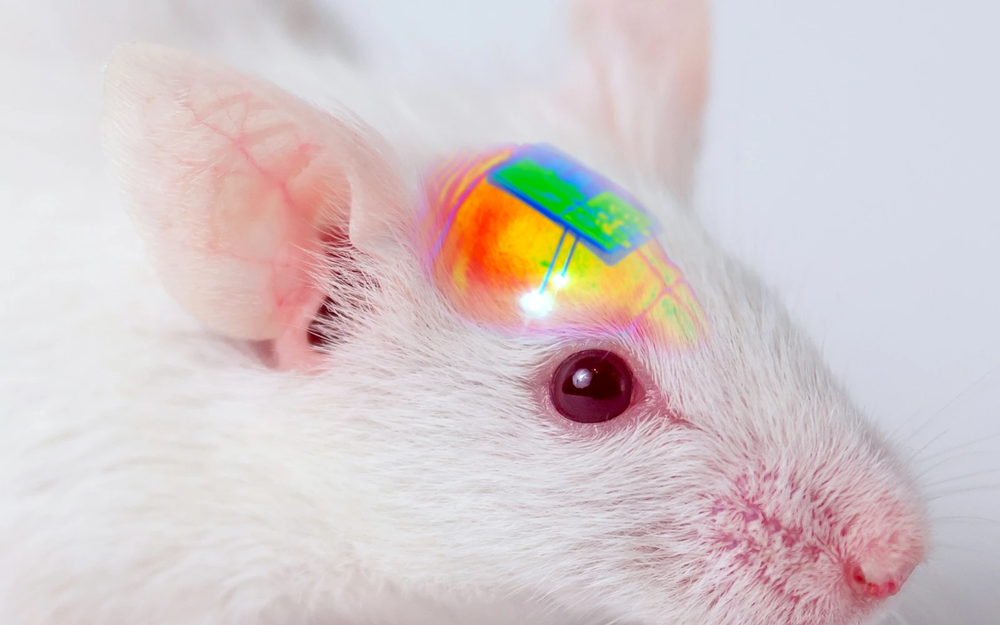
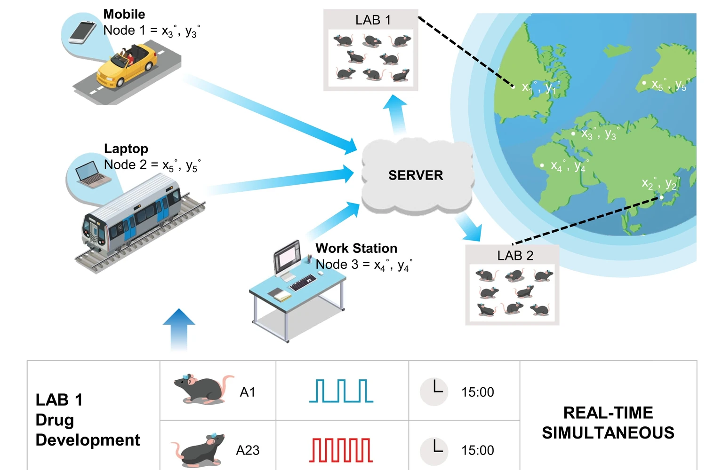
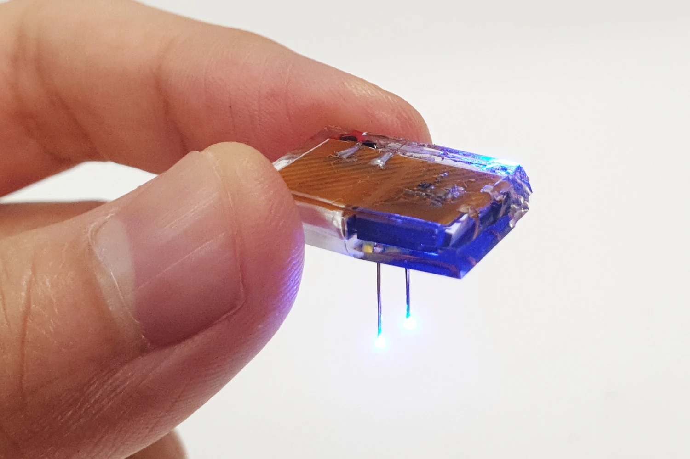
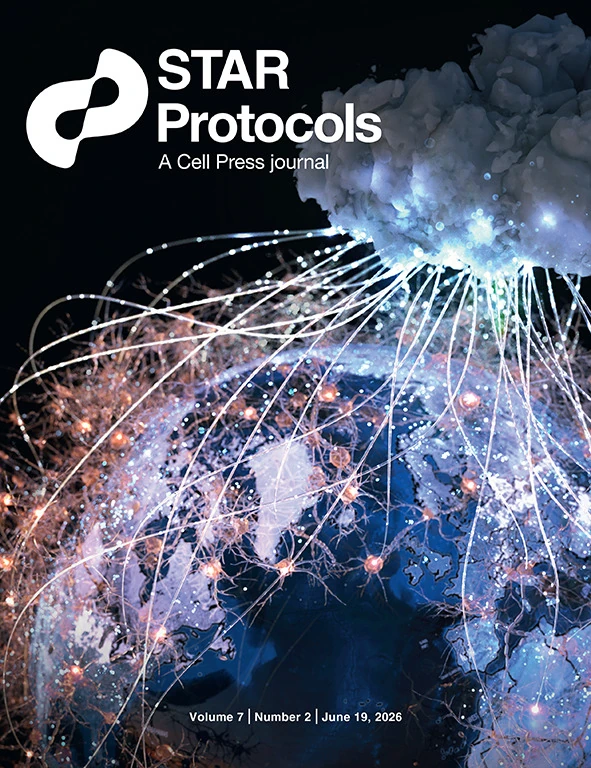
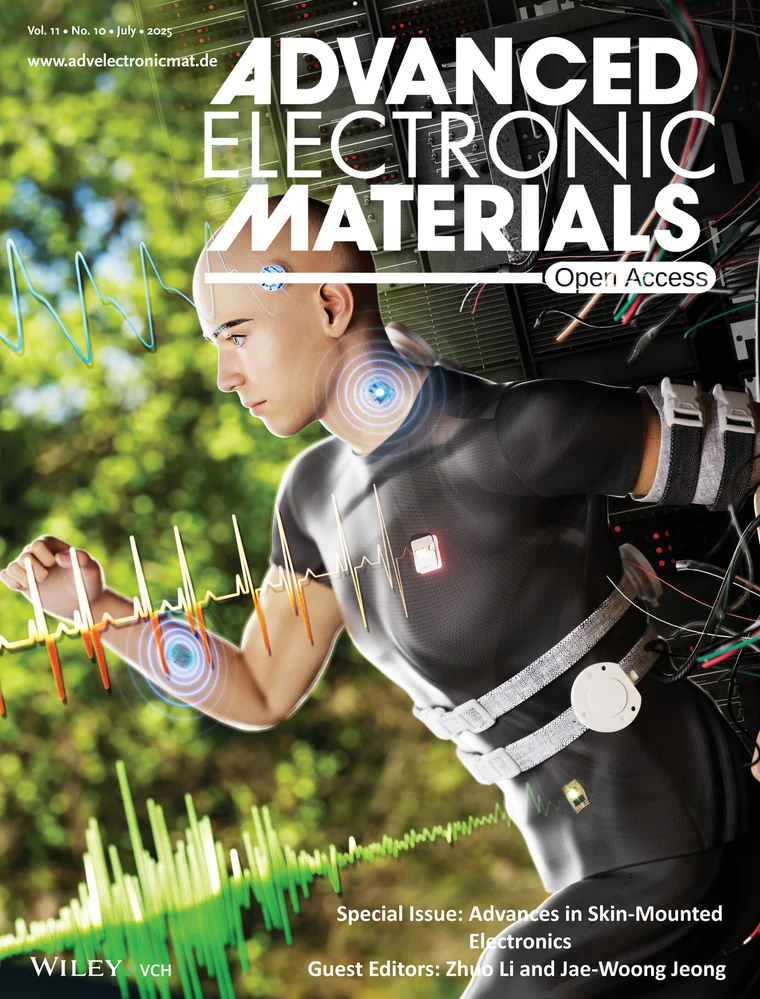
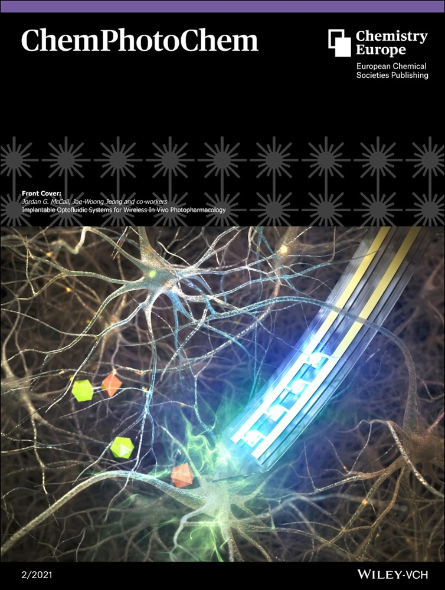

Northwestern University
Postdoctoral Scholar · Prof. John A. Rogers
Implantable neural interfaces · Wireless bioelectronics
Postdoctoral Scholar at Northwestern University
Developing implantable neural interfaces and wireless bioelectronic systems for precise sensing, modulation, and connected biomedical applications.

About
I am a postdoctoral scholar working at the intersection of implantable neural interfaces and wireless bioelectronics. My research combines miniaturized electronics, optoelectronic approaches, wireless technologies, and soft materials to create systems for neural modulation, sensing, and long-term biomedical applications.
Academic background
Selected appointments and training; full details are available in the CV.
Postdoctoral Scholar · Prof. John A. Rogers
Postdoctoral Scholar · Prof. Jae-Woong Jeong
Visiting Researcher · Prof. Zhenan Bao
Ph.D. in Electrical Engineering
Research
Two complementary directions that connect neural interfacing with wireless system engineering.

Developing implantable neural interfaces that combine miniaturized electronics with optoelectronic strategies to use light for precise neural modulation and optical readout of neural activity.
Integrating wireless technologies into emerging bioelectronic devices while creating new platforms for wireless power delivery, communication, and programmable operation.
Publications
Representative achievements

A modular network ecosystem for real-time and scheduled control of large-scale behavioral and circuit-neuroscience experiments.
View publication
A fully implantable platform that combines wireless battery charging with programmable control for chronic optogenetic studies.
View publicationComplete publication list
Science Advances 12, eaee8648, Jul. 2026.
STAR Protocols 7(2), 104453, Jun. 2026.
Featured on the Cover
npj Flexible Electronics, May 2026.
Nature Communications 16, 7797, Aug. 2025.
Advanced Electronic Materials 11(10), 2400884, Jul. 2025.
Featured on the Front Cover
Advanced Materials 37(28), 2417913, Jul. 2025.
Featured as the Frontispiece
Science Advances 11(22), eadv4921, May 2025.
Advanced Science 12(4), 2406576, Jan. 2025.
Neurobiology of Disease 203, 106733, Dec. 2024.
Biosensors and Bioelectronics 258, 116328, Aug. 2024.
Science Advances 10(9), eadn1186, Feb. 2024.
Science Advances 10(3), eadk5260, Jan. 2024.
Advanced Functional Materials 33(24), 2214766, Jun. 2023.
Featured on the Inside Back Cover
Journal of Neuroscience 43(9), 1555-1571, Mar. 2023.
Biosensors and Bioelectronics 223, 115018, Mar. 2023.
Nature Protocols 18, 3-21, Jan. 2023.
Featured on the Cover
Advanced Materials 34(44), 2204805, Nov. 2022.
Featured on the Front Cover
Nature Biomedical Engineering 6, 771–786 (2022)
ChemPhotoChem 5(2), 96-105 (2021)
Featured on the Front Cover
Nature Communications 12, 535 (2021)
Advanced Functional Materials 30(46), 2004285 (2020)
Featured on the Back Cover
Nature Biomedical Engineering 3, 655-669 (2019)
Frontiers in Neuroscience 12, 764 (2018)
Journal covers
Selected journal covers featuring published work.

STAR Protocols · 2026
Featured on the Cover

Advanced Electronic Materials · 2025
Featured on the Front Cover

ChemPhotoChem · 2021
Featured on the Front Cover
Honors
Selected individual fellowships and academic honors.
Fellowship
National Research Foundation of Korea
Fellowship
KAIST
KAIST Electrical Engineering
Also selected among the Top 10 achievements in social problem solving · Ministry of Science and ICT
Best Research Achievement · KAIST Electrical Engineering
Sungkyunkwan University
Contact
For research collaborations, academic opportunities, or questions about my work, please reach out by email.
Querrey Simpson Institute for Bioelectronics · Northwestern University